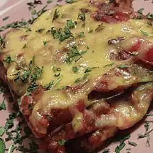

Lasagne

A colorful, tasty dish.
Served with garlic bread, this vegetarian lasagne makes an excellent meal for guests
- 2 tablespoons olive oil
- 3 onions, chopped
- 1 green bell pepper, chopped
- 1 red bell pepper, chopped
- Heat the oil in a large saucepan.
- Add the onions and saute for 3 minutes.
- Add the peppers and saute for 2 minutes.
- Add the zucchini and saute 3 minutes before adding the tomatoes, tomato paste, garlic and oregano, basil, thyme, salt and pepper.
- Cover the saucepan and simmer for 20 to 30 minutes (the longer the better as long as the sauce is not sticky.)